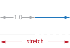
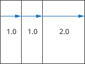
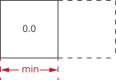
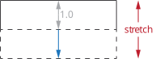
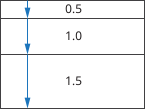
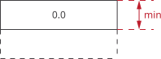

Stretch
Overview
Resizable elements are elements with minimum limits that are less than the
maximum limits in either x or y dimensions or both. Resizable elements can
therefore stretch if there is extra available space allocated to them beyond
their minimum limit. When two or more resizable elements are placed side by
side in an htile or vtile, the element’s "stretchiness"
determines how much extra space is given to it. The element’s "stretchiness"
is determined by the element’s stretch member function:
virtual view_stretch stretch() const;where view_stretch is the struct shown under Declaration.
The view_stretch x and y members determine how much an element can
stretch in the x or y dimensions. The default is 1.0. A stretchiness value of
2.0 means that the element is able to stretch twice as much compared to its
siblings in an htile or vtile, assuming they have the
default 1.0 stretchiness.
Each factory returns a Proxy.
view_stretch
Declaration
struct view_stretch
{
float x = 1.0;
float y = 1.0;
constexpr float& operator[](axis a);
constexpr float operator[](axis a) const;
};Expressions
Notation
s,a,b-
Objects of type
view_stretch. sx,sy-
floatstretch values for the x and y dimensions. ax-
axis::xoraxis::y.
Constructors and Assignment
| Expression | Semantics |
|---|---|
|
Construct a |
|
Construct a |
|
Copy construct from |
|
Assign |
view_stretch is an aggregate, so it is built with braces.
|
hstretch and no_hstretch

Overrides the horizontal stretchiness of an enclosed element (subject).
For example, the image below shows how three elements are laid out in an
htile, with stretch values of 1.0, 1.0 and 2.0, respectively:

The element with the 2.0 stretch value stretches twice as much compared to
its siblings.

Turns off the horizontal stretchiness of an enclosed element (subject).
Declaration
template <concepts::Element Subject>
class hstretch_element : public proxy<Subject>
{
public:
hstretch_element(float stretch, Subject subject);
void hstretch(float stretch);
float hstretch() const;
...
};
template <concepts::Element Subject>
hstretch_element<remove_cvref_t<Subject>>
hstretch(float stretch, Subject&& subject);
template <concepts::Element Subject>
hstretch_element<remove_cvref_t<Subject>>
no_hstretch(Subject&& subject);The rest of hstretch_element is the Proxy interface (see
Proxies).
Expressions
Notation
stretch-
A scalar value
subject-
Instance of
Element e-
The element
hstretchorno_hstretchreturns
Factory
| Expression | Semantics |
|---|---|
|
The |
|
The same as |
vstretch and no_vstretch

Overrides the vertical stretchiness of an enclosed element (subject).
For example, the image below shows how three elements are laid out in a
vtile, with stretch values of 0.5, 1.0 and 1.5, respectively:

The element with the 0.5 stretch value stretches half less, while the
element with the 1.5 stretches half more than the default.

Turns off the vertical stretchiness of an enclosed element (subject).
Declaration
template <concepts::Element Subject>
class vstretch_element : public proxy<Subject>
{
public:
vstretch_element(float stretch, Subject subject);
void vstretch(float stretch);
float vstretch() const;
...
};
template <concepts::Element Subject>
vstretch_element<remove_cvref_t<Subject>>
vstretch(float stretch, Subject&& subject);
template <concepts::Element Subject>
vstretch_element<remove_cvref_t<Subject>>
no_vstretch(Subject&& subject);The rest of vstretch_element is the Proxy interface (see
Proxies).
Expressions
Notation
stretch-
A scalar value
subject-
Instance of
Element e-
The element
vstretchorno_vstretchreturns
Factory
| Expression | Semantics |
|---|---|
|
The |
|
The same as |
Example
A row of three boxes sharing the extra width: one with the default stretchiness, one that stretches twice as much, and one that does not stretch:
#include <elements/element/size.hpp>
#include <elements/element/tile.hpp> // For htile
#include <elements/element/style/misc.hpp> // For box
...
using namespace cycfi::elements;
...
auto row = htile(
box(colors::red), (1)
hstretch(2, box(colors::green)), (2)
no_hstretch(hmin_size(40, box(colors::blue))) (3)
);| 1 | A box with the default 1.0 stretchiness. |
| 2 | A box that takes twice as much of the extra width as the red box. |
| 3 | A box at least 40 wide that takes none of the extra width. |
Copyright (c) 2014-2024 Joel de Guzman. All rights reserved. Distributed under the MIT License